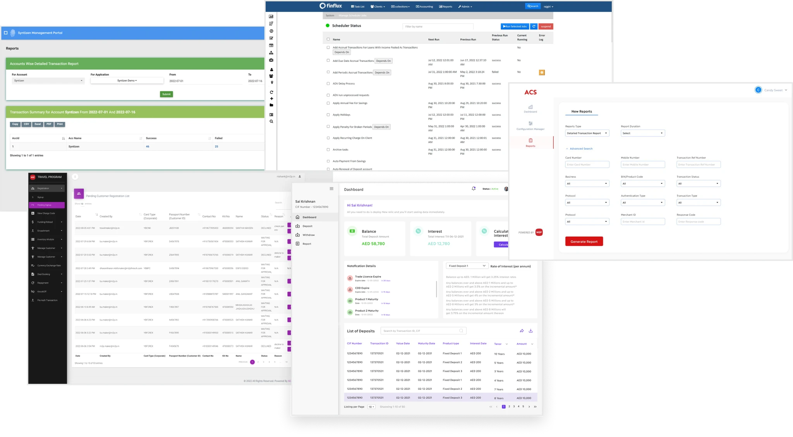
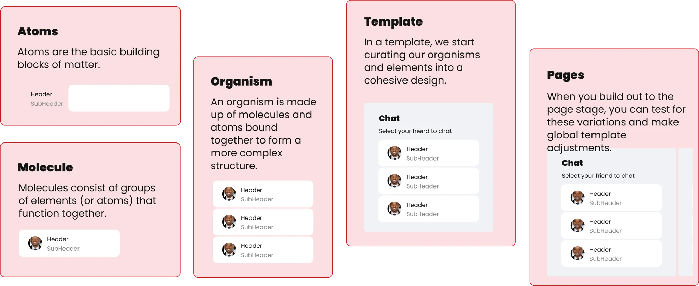
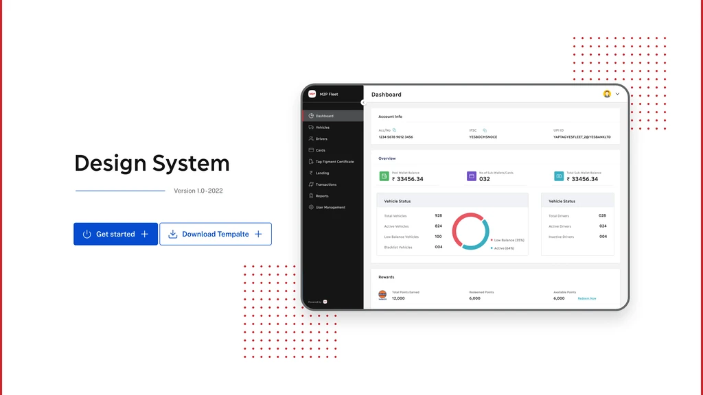
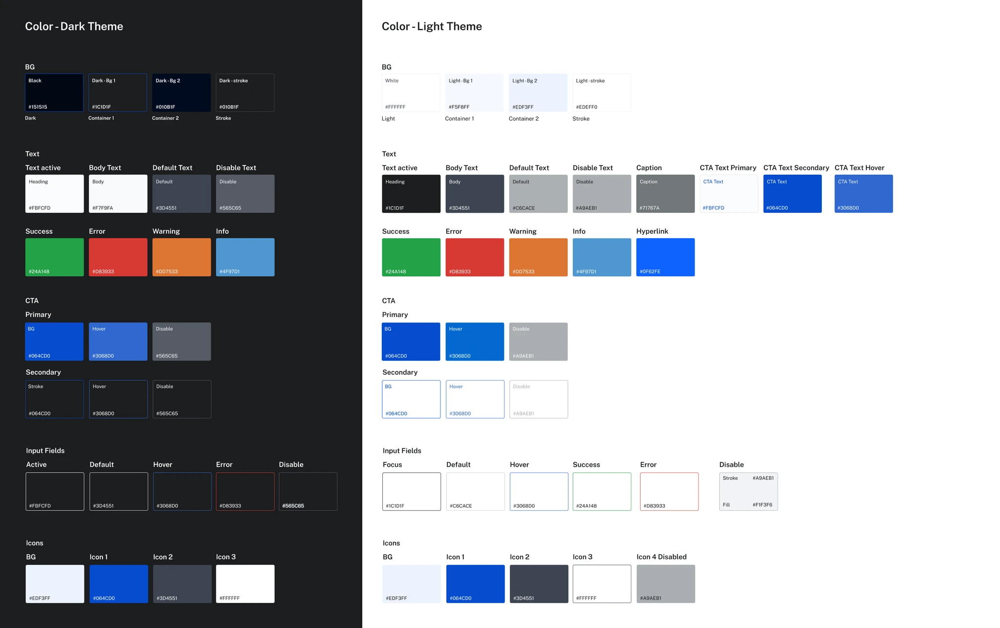
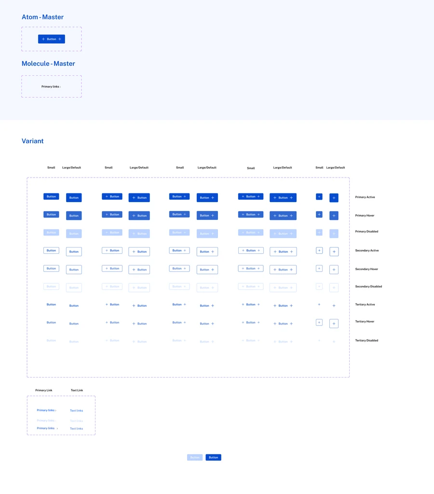
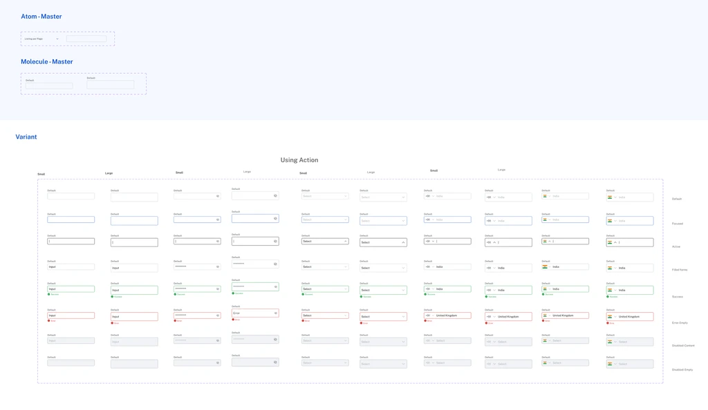
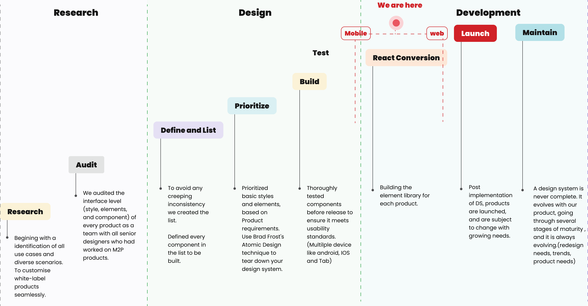
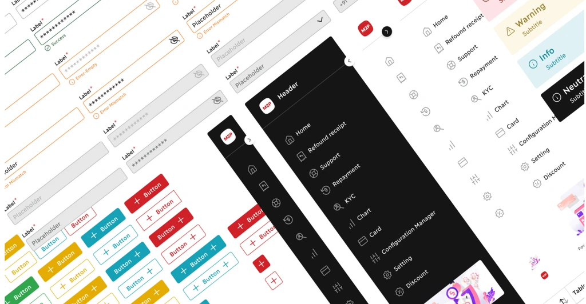
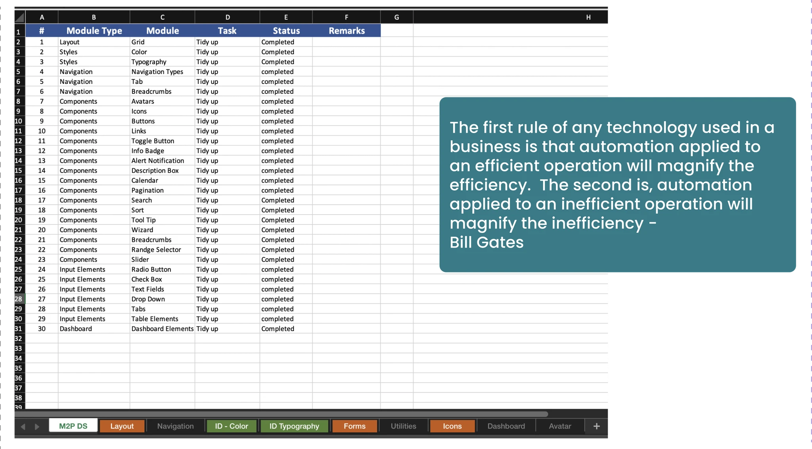

A full trace from the fragmentation I noticed to the system that replaced it — including the parts that were never formally tested, shown as what they are.
M2P runs multiple fintech product teams in parallel — cards, lending, payouts, and more — each shipping fast, each with its own designer. Nobody planned for it, but every team ended up with its own slightly different button, its own slightly different card, its own slightly different spacing scale. As the number of products grew, that stopped being a cosmetic quirk and started being real design debt.
Designers, developers, and project managers across M2P's product teams — the people who would have to adopt and maintain whatever got built.
No shared foundation. Each team maintained its own informal patterns, rebuilt from the last project rather than a governed source.
No dedicated design-systems team or formal mandate — this had to fit around teams already shipping, not pause them.
Lead UX Designer. I identified the problem myself and drove the initiative — it wasn't assigned to me.
Exact timeline and team size were not preserved in the available documentation. Where a figure isn't backed by a source, this case study says so rather than estimating one.
Success criteria (confirmed): higher visual and UX consistency across products, measured qualitatively via a before/after audit, and voluntary adoption by teams rather than a mandated rollout.
The initial problem was mine to notice, not one handed to me: working across several M2P teams, I kept seeing the same UI problems solved slightly differently each time. That's an assumption until it's checked — so I treated "teams experience this as a real problem" as a hypothesis, not a fact, going in.
The original interview guide and verbatim participant quotes were not preserved in the available documentation. What follows is the documented substance of the findings, not reconstructed quotes.

Quantified survey results and a formal count of contradictory findings were not documented. Research limitations: this was designer-led research without a dedicated research function, and the sample was the teams available, not a randomized cross-section of M2P.
Observation → Pattern → Insight → Design implication: Teams kept rebuilding the same basic components → the pattern was independent re-solving of already-solved problems → the insight was that no shared foundation existed for basic decisions → the implication was a governed, reusable component and token system, not a style guide nobody enforces.
The number of individual participants supporting each cluster was not tracked at the time.
That skepticism about top-down mandates directly shaped a later decision: the rollout shipped core assets first and iterated from real team feedback, instead of mandating adoption all at once.
No individual persona was developed for this initiative, and I'm not fabricating one to fit the template. The real research supports three segments, described honestly below.
Need consistent, reusable components instead of rebuilding from scratch each project.
Need clear specs and predictable handoff instead of re-interpreting slightly different patterns per team.
Need cross-product consistency that doesn't cost extra design/dev cycles to maintain.
A formal journey map with tracked emotions per touchpoint was not produced at the time. What follows is reconstructed from the documented rollout sequence, not from moment-by-moment observation.
A team learns the system exists → reviews the documented components and tokens against their own product's needs → implements it in a live project → and, where something was missing, requests it be added rather than building around the system. The critical moment for design intervention sits at Evaluation: if the system doesn't clearly solve a team's actual friction at that point, adoption stalls before it starts.
M2P designers and developers need a shared, governed component and token system, because without one, every new product silently re-fragments the experience customers have across M2P.
How might we give every M2P product team a consistent design foundation without slowing down the teams already shipping?
A literal impact/effort matrix wasn't drawn at the time. This reconstructs the reasoning behind the real sequencing choices that were made.
I didn't run an extended bake-off between B and the alternatives — the constraints made the answer clear quickly, and pretending otherwise would have just cost time. That's a deliberate call, not a gap in rigor: some decisions are that clear-cut once the constraints are named. The harder decision — theming — was still ahead.

The user mental model driving this was simple: teams think in terms of "the same component, reused everywhere," not "my project's version of this component." That pushed the IA toward a layered structure — foundations (colour, type, tokens) → components → themes — rather than a flat, undifferentiated pattern list.
Formal card-sorting with teams was not conducted; this hierarchy was derived directly from the token-layering decision below, not a separate IA exercise.
Edge case handled by design, not by error states: when a team needed a component that didn't exist yet, the answer wasn't a dead end — it was a contribution path back into the system, part of why the rollout was phased rather than fixed at launch.
This is internal design tooling, not an end-user product — traditional auth/empty/error states weren't the relevant edge cases here, so they aren't fabricated to fit the template. The one documented edge case (missing component) is shown above.
Low- and mid-fidelity exploration stages were not preserved in the available files — only the final, high-fidelity system documentation exists to show.
On the theming screen specifically: the problem it solves is letting any product switch between light, dark, or a brand variant without a rebuild; the interaction decision was a token-swap rather than per-component overrides; the alternative considered and rejected was per-team override files, which is exactly the fragmentation this project existed to remove.

The real fight wasn't naming atoms and molecules. It was making one set of tokens hold up across light mode, dark mode, and multiple brand contexts without every team maintaining their own copy.
The fix separated the system into layers: core brand primitives that never change, semantic tokens that describe intent (surface, border, accent) rather than a literal value, and theme-level overrides that swap the semantic layer without touching a single component. Switching themes became a configuration change, not a rebuild.
Component-level interaction detail (form validation, loading, micro-interactions) wasn't documented individually for this system-level initiative. The one confirmed, real interaction/accessibility commitment: the colour system was explicitly built to meet sufficient contrast ratios, not just to look correct.



No formal usability-testing framework — hypothesis, recruited participants, task-based sessions, SUS scoring — was run for this initiative. I'm stating that plainly rather than presenting invented sessions or scores. What validated the system instead: real team adoption, tracked qualitatively, and a direct before/after consistency audit.

Core assets and documentation shipped first; iterative enhancement followed, driven by real feedback from the teams actually using the system — not a fixed scope decided up front. That sequencing is the direct design change that came out of the empathy-mapping finding that teams were skeptical of top-down mandates.

| Metric | Before | After | Change |
|---|---|---|---|
| Consistency across products | Fragmented (audited) | Shared foundation in use | Improved — qualitative |
| Task completion / time on task | Not measured | Not measured | No formal test run |
| SUS / satisfaction score | Not measured | Not measured | No formal test run |
Inconsistent components, drifting styles, and duplicated effort across product teams — no shared source of truth.
A shared foundation every team builds on — visibly fewer brand and UI deviations across M2P's products.

What improved: visible consistency and a shared foundation teams actually reference. What didn't improve, or remains unmeasured: there's no tracked compliance metric across every team, and adoption depth varies by product. What surprised me: the structural decision (Atomic Design) was the easy 20% — theming was where the real design problem lived. What's next: extend the token system to new product lines as they launch, grow coverage of complex composite patterns, and formalize contribution guidelines so teams add back to the system, not just consume it.
Research → Insight → Problem → Opportunity → Priority → IA → Flow → Design → Iterate → Validate. Not every link in that chain was backed by a formal test — and this case study says exactly where that's true, rather than implying otherwise.
M2P Design System — a UX Case Study by Ayyappan Rajendiran